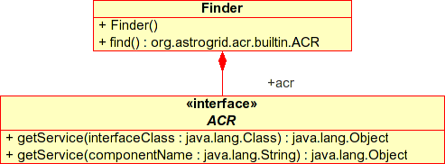
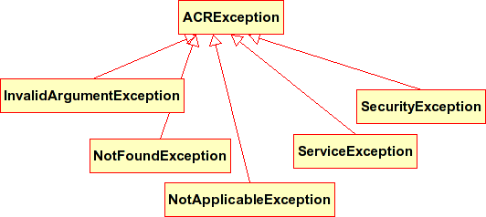

Find and connect to the Astro Runtime instance
Start by creating an instance of the {@link org.astrogrid.acr.Finder} class. This takes care of locating a
running Astro Runtime service (possibly creating one if necessary) and returns an instance of {@link org.astrogrid.acr.builtin.ACR} that is
connected to the running service. The ACR object can then be used to access all other service interfaces.

Exceptions
The Astro Runtime interface deliberately defines a very small and simple set of exceptions. No other checked (or unchecked) exceptions are expected
to be thrown from any methods in the interface. The inheritance hierarchy is as follows
